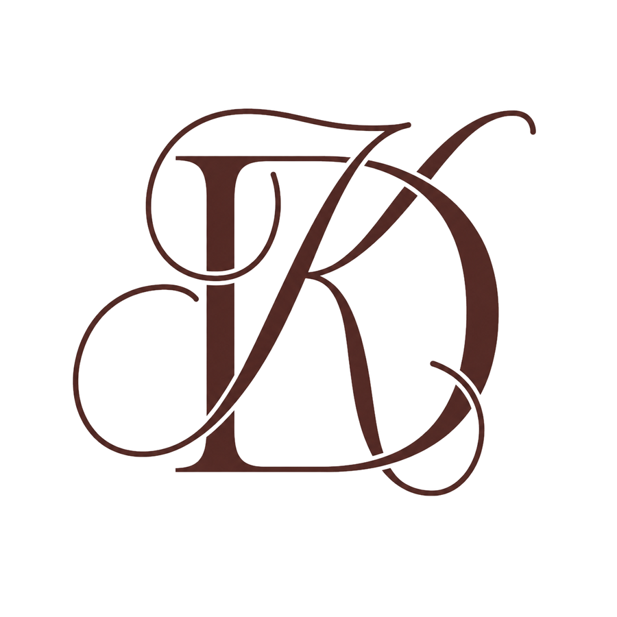
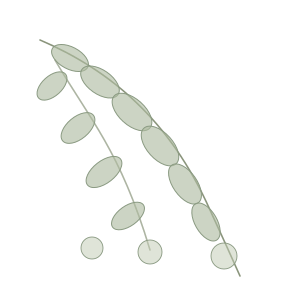
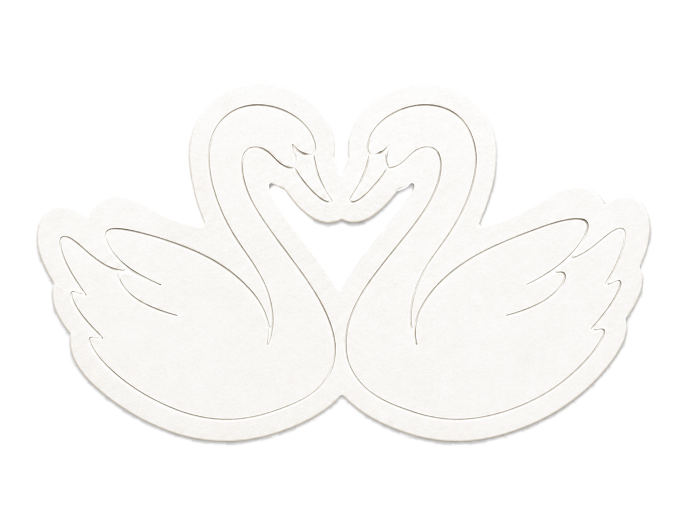

You've been invited by
press the seal

us, someday soon

Two hearts. One promise.
One beautiful forever.

Together with their families,
Divyanshika & Kumel joyfully invite you to celebrate
the beginning of their forever — a union of love, laughter and togetherness.
The celebrations
Your love, blessings and presence
will make these celebrations truly unforgettable.
Formal invitation to follow
With love
The venue
Ghaziabad
For guests travelling
Reception Dinner · 19 December 2026, Evening
Pune — venue details to follow
add the celebrations to your calendar
SK Klyde Grand · Ghaziabad
✦ ✦ ✦
For any questions, please reach out to us.
+00 00000 00000